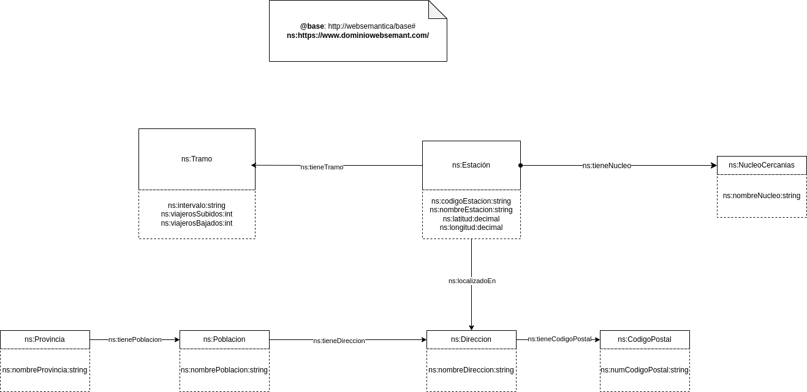

Análisis
Este documento definirá el dataset (tanto la fuente como el esquema), las licencias y la estrategia de nombrado de recursos
Dataset
El dataset está compuesto de dos archivos CSV,
listado-estaciones-cercanias-malaga-v4
y malaga_viajeros_por_franja_csv
Fuentes
Estaciones de cercanías Málaga
Este archivo contiene información sobre las estaciones de cercanías de Málaga. El archivo tiene las siguientes columnas:
- Codigo: Identificador de la estación
- Descripcion: Nombre de la estación
- Latitud: Latitud de la estación
- Longitud: Longitud de la estación
- Dirección: La dirección de la estación
- C.P.: El código postal
- Población: La población en la que se encuentra la estación
- Provincia: La provincia en la que se encuentra la estación
- Fichas: URL a la página web de Cercanías de la ficha de la estación
Existen 23 estaciones en total.
Viajeros por franja horaria
Este archivo contiene información sobre el número de viajeros en las estaciones de cercanías de Málaga por franja horaria. El archivo tiene las siguientes
columnas:
- Codigo: Identificador de la estación
- Nombre: Nombre de la estación
- Nucleo: El Cercanías, en este caso todos son Málaga
- Tramo horario: Franja horaria de la medición
- Viajeros subidos: Número de entradas en la estación
- Viajeros bajados: Número de salidas en la estación
Se puede ver que ALORA es una estación bastante equilibrada, donde el número de viajeros subidos y bajados es similar (aunque en distintos horarios). Por
otro lado, en ALJAIMA casi no se suben ni bajan viajeros, siendo una estación poco utilizada.
Esquema
El esquema de los archivos está descrito en el siguiente diagrama:

Licencias
Debido a que las fuentes vienen de la página web del gobierno de España, los datos son públicos. En la
sección de aviso legal de la página se puede ver que los datos pueden ser usados para fines comerciales
y no comerciales, siempre y cuando, como dice en la página:
- Está prohibido desnaturalizar el sentido de la información.
-
Debe citarse la fuente de los documentos objeto de la reutilización. Esta cita podrá realizarse de la siguiente manera: “Origen de los datos:
Secretaría de Estado de Digitalización e Inteligencia Artificial del Ministerio para la Transformación Digital y de la Función Pública”.
-
Debe mencionarse la fecha de la última actualización de los documentos objeto de la reutilización, siempre cuando estuviera incluida en el documento
original.
-
No se podrá indicar, insinuar o sugerir que la Secretaría de Estado de Digitalización e Inteligencia Artificial del Ministerio para la
Transformación Digital y de la Función Pública titular de la información reutilizada participa, patrocina o apoya la reutilización que se lleve a
cabo con ella.
-
Deben conservarse, no alterarse ni suprimirse los metadatos sobre la fecha de actualización y las condiciones de reutilización aplicables incluidos,
en su caso, en el documento puesto a disposición para su reutilización.
Estrategia de nombrado de recursos
Para los recursos se seguirá la siguiente estrategia de nombrado:
- Se crea un prefijo ns con la URI <https://www.dominiowebsemant.com/ontology/CercaniasMalaga#> para hacer referencia a los recursos
-
Se crea un prefijo ind con la URI <https://www.dominiowebsemant.com/resource/> para hacer referencia a las instancias (individuos) de los
recursos
- Los recursos e instancias se nombrarán en español
- Se crean clases para cada columna del listado de estaciones con mayúscula
- Las propiedades se nombrarán en minúsculas y con cammel case